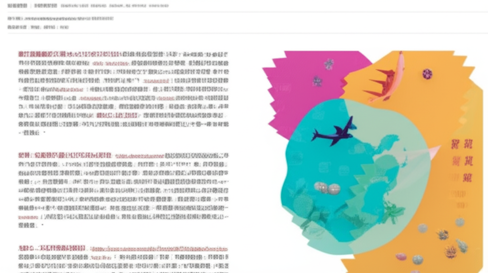

# 近期健康資訊與超慢跑趨勢分析
## 引言
近期的網路資訊顯示，健康議題和運動方式持續受到關注，其中「超慢跑」似乎成為一個熱門關鍵字。從新聞報導、健康資訊網站到購物平台，都能看到與超慢跑相關的內容。本文將分析這些資訊，探討當前的健康趨勢，以及超慢跑為何受到歡迎。
## 主體內容
### 第一點：超慢跑的普及與相關產品
從搜尋結果中可以看到，超慢跑不僅僅是一種運動方式，也衍生出相關產品。例如，momo購物網上販售的「超慢跑墊」，結合了按摩和運動的概念，反映了消費者對於運動輔助產品的需求。此外，一些文章將超慢跑與其他健康議題結合，例如「超慢跑助長壽醫：1數值降死亡率飆」，顯示了超慢跑在健康領域的應用潛力。
### 第二點：多元的健康資訊來源
除了專門的健康網站如「三立新聞網HEALTH.SETN.COM」和「中時新聞網-健康」，時尚雜誌「Vogue Taiwan」也涵蓋了健康相關內容，例如散步和健走等運動方式。這表明健康資訊的傳播管道越來越廣泛，消費者可以從不同來源獲取相關知識。同時，生活型態醫學的概念也逐漸被提及，強調運動在維持健康的重要性。
### 第三點：健康議題的多元面向
新聞和健康資訊涵蓋了多個層面，例如飲食（咖啡、茶的健康比較）、疾病預防（肝臟健康、排便習慣）、高齡社會的應對措施以及本土語言推廣（郭于中的台語新聞）。這顯示了現代人對健康的關注不僅僅局限於運動，而是涵蓋了生活中的各個方面。此外，天下雜誌關注超高齡社會的議題，也反映了社會對老年人健康的重視。
## 結論
總體而言，近期的網路資訊顯示，健康意識日益增強，超慢跑作為一種簡單易行的運動方式，受到越來越多人的關注。消費者不僅追求運動本身，也開始尋找相關產品來輔助運動效果。同時，健康資訊的來源更加多元，涵蓋了飲食、疾病預防、高齡社會等各個面向，反映了人們對健康議題的全面關注。